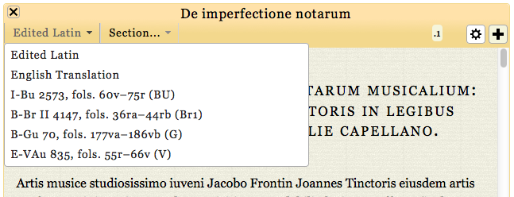

  	<div class="content">
  	  <div class="contentbox">
        <div class="explanation navigation">
          <div class="explanation-row">
            <div class="cell"></div>
            <div class="cell"><a href="../#">Up (website guide)</a></div>
            <div class="cell"></div>
          </div>
          <div class="explanation-row">
            <div class="cell"><a href="1.html">Back (panel overview)</a></div>
            <div class="cell"></div>
            <div class="cell"><a href="3.html">Next (navigation options)</a></div>
        </div></div>
        <h3>The edition pages: the view menu</h3>
        <p>Using the view menu, you can choose to see the edited Latin
          text, our translation, or transcriptions of the individual sources:</p>
        <div class="helpshot h647">
          
        </div>
        <!--end .contentbox -->
  	  </div>
    </div>
    <!-- end .content -->
   </div>